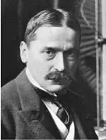
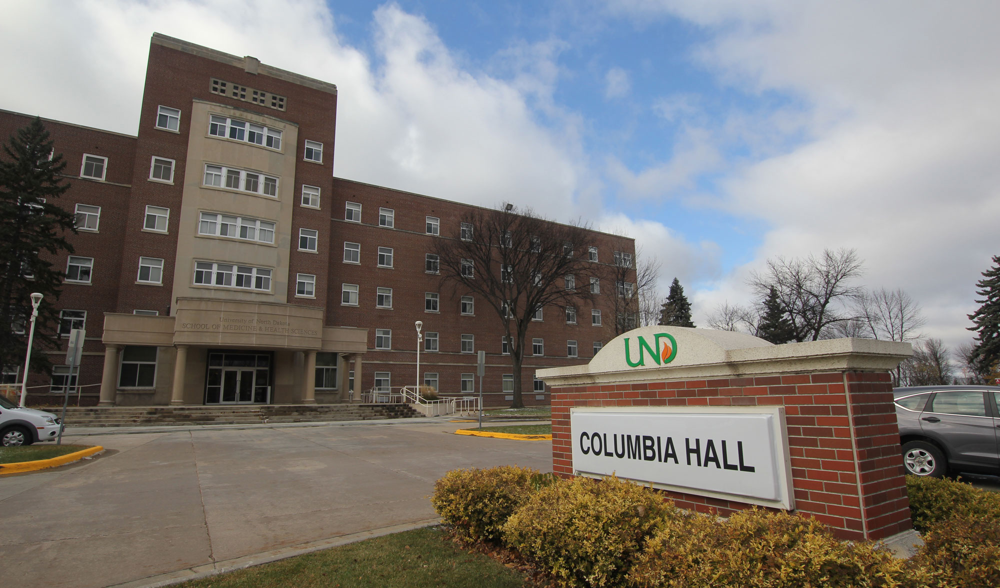

Portret Mihajla Pupina
Za mladog čoveka uopšte nije nesreća biti bez novaca, ako se odlučio da sam sebi krči put samostalnom životu, pod uslovom da u sebi ima dovoljno snage da savlada sve teškoće sa kojima će se sukobiti. text.
Sve stvari su u međusobnom kontaktu, svaka zvezda oseća, da se tako izrazimo, bilo kakve druge zvezde i svega živoga, čak i najmanjeg crvića na Zemlji. text.

Mihajlo Pupin,

Univerzitet Kolumbija gde je isao Mihajlo Pupin